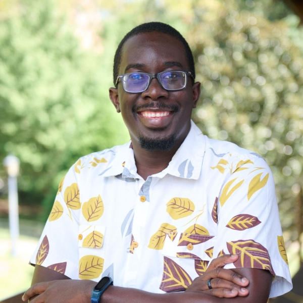
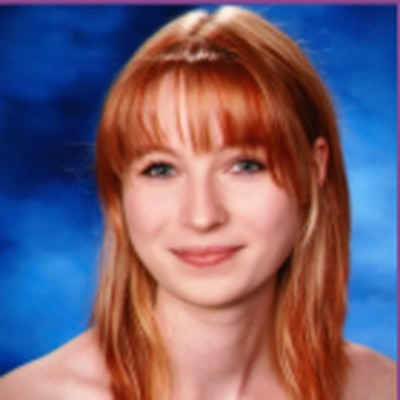
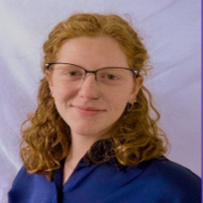
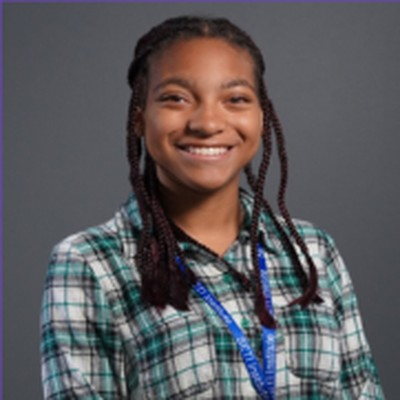
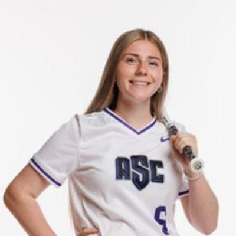
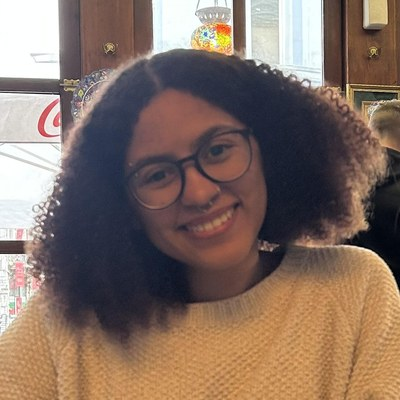

Principal Investigator

Dr. Hodari-Sadiki Hubbard-James
Assistant Professor of Astronomy
Dr. Hubbard-James has been Assistant Professor of Astronomy at Agnes Scott College since July 2023. He received his B.A. in Physics from Berea College, his M.S. in Biomedical Engineering from the University of Cincinnati, and his Ph.D. in Astronomy from Georgia State University. In addition to directing research at the ISLANDS Lab, he teaches courses in astronomy, astrophysics, and data science.
Lab Members
Current Undergraduate Researchers





Graduate Student Collaborator
- Sebastián Carrazco Gaxiola (Georgia State University, PhD Candidate) - Stellar spectroscopy and K dwarf characterization
Alumni
- Daniela Garcia-Lara (Agnes Scott College, 2024-2025)
- Nia Suitt (now at University of Central Florida, 2024-2025)
Collaborators
- Prof. Todd J. Henry (RECONS Institute) - K dwarf stellar characterization
- Prof. Abel Méndez (Planetary Habitability Laboratory, University of Puerto Rico at Arecibo) - Technosignature analysis
- Leonardo Paredes (Steward Observatory, University of Arizona) - Stellar spectroscopy
- Dr. Allison Youngblood (NASA Goddard Space Flight Center) - Stellar ultraviolet emission